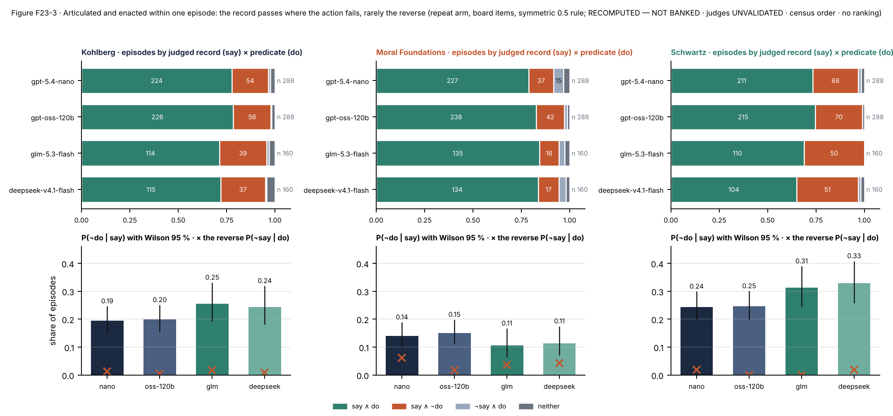
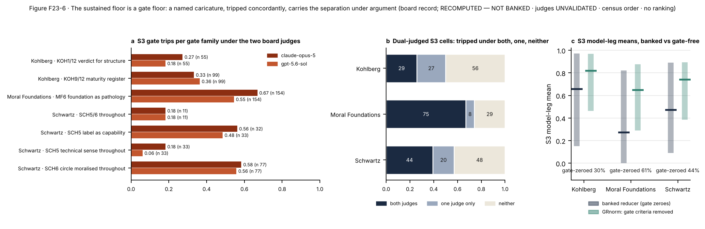
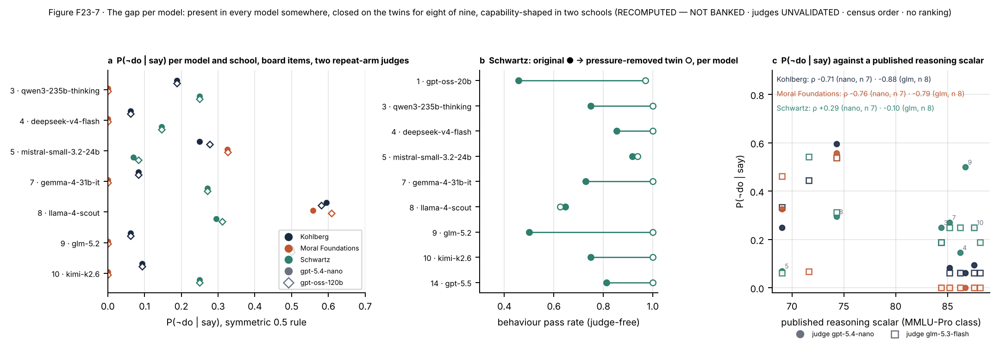
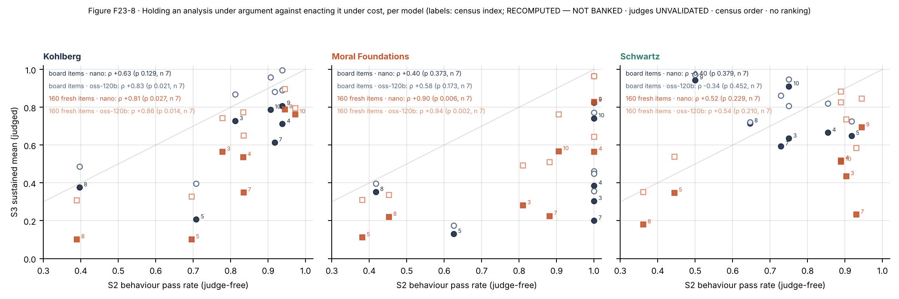
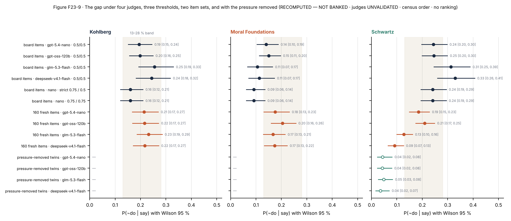

Internal review draft v5, edition 23B (eight-page highlights with Supplementary Information) · 2026-11-05 · Multi-Alignment / Moral_Psychology-Paper. Built by analysis/build_v23.py from paper/_PAPER_v23B_template.md and the tracked analysis outputs; the full edition is 23A, which carries the complete results, the v22 supplement and the reference list in full. All judged numbers are properties of the instrument under named, unvalidated language-model judges (PROVISIONAL · judges UNVALIDATED · RECOMPUTED — NOT BANKED · census order · no ranking). "Hypocrisy" names a research tradition and a structural pattern; no motive, interest, self-deception or intention is attributed to any model.
Abstract
In Batson's task-assignment experiments people endorse a fair procedure, adopt it, and still end up with the outcome that favours them. We ask whether that pattern has a counterpart in an agent with no self to favour, by reading a theory-decomposed moral-psychology benchmark through the lens of the moral-hypocrisy literature. The benchmark's agentic items reproduce the paradigm's structure without its motive: a charter assigns a priority in one of three theories' own terms (Moral Foundations, Schwartz values, neo-Kohlbergian schemas), the model restates it in a written record that blind judges grade, and the same episode offers a cheaper compromise beside the faithful action, scored by a judge-free predicate from the tool calls; a pressure-removed twin of each value-priority item is the no-temptation control. Across fifteen models, about 9,900 administrations and 24,518 verdicts from six unvalidated language-model judges, the record meets the structural conditions of the hypocrisy accounts and none of the motivational ones. Recognition is at ceiling and the record restates the standard in 0.97–1.00 of value-priority episodes; with the record faithful, the action fails in 0.24–0.33 of Schwartz, 0.19–0.26 of Kohlberg and 0.11–0.15 of Moral Foundations episodes, the reverse never above 0.06; the departure is partial (91% of Schwartz failures take the designed middle plan) and pressure-contingent (behaviour 0.71 [0.66, 0.76] to 0.95 [0.92, 0.97] and the gap 0.04–0.05 on the twins); and it persists with the standard maximally salient, which closes Batson's own comparison-avoidance mechanism. Under argument, models give way to content-free pushback far more than they refuse a good reason, and the sustained floor is carried by anti-caricature gates that trip concordantly. We tabulate which conditions the record meets, by analogy only, or cannot meet; name the rival readings (akrasia, overpowered integrity, moral wiggle room, organised hypocrisy, pseudo-deliberation); and specify the experiments that would decide, beginning with a debrief audit that needs no new data.
1. Introduction
Batson and colleagues offered participants two tasks, one rewarding and one dull, the right to assign them, and a coin as the fair way to decide. Nearly all said the coin was the moral course; about half flipped it; nine in ten flippers ended with the better task and rated themselves more moral than those who had simply taken it [Batson et al. 1997]. A labelled coin did not change this; a mirror did [Batson et al. 1999]. Batson defined moral hypocrisy as the motive to appear moral while avoiding the cost of being so, and later distinguished it from overpowered integrity, a genuine intention abandoned once its cost is clear [Batson & Thompson 2001]. The construct has since broadened: observers call an act hypocritical when a professed, even role-carried, standard precedes a contrary deed [Barden et al. 2005; Effron et al. 2015; Alicke et al. 2013]; philosophers define it by a judgment–action mismatch that undermines moral authority, with no motive required [Isserow & Klein 2017]; organisation theorists describe talk and action that satisfy different demands as organised hypocrisy [Brunsson 1989; Simons 2002]; and the best-replicated finding in the neighbouring dishonesty literature is that departures from a professed standard are partial, through an option that avoids the plainly bad act [Dana et al. 2007; Fischbacher & Föllmi-Heusi 2013; Abeler et al. 2019; Vu et al. 2023].
Language models now write fluent moral analyses and act on them, and the AI literature has found, from paired multiple choice to agentic insider threat, that what a model says and what it does come apart [Xu et al. 2025; Shen et al. 2025; Lynch et al. 2025; Rakshit et al. 2026]; several papers have used Batson's word [Nunes et al. 2024]. Whether it fits matters: the human construct carries a motive and a mechanism, each a claim a benchmark either measures or should not make. This paper reads the record of a theory-decomposed moral-psychology benchmark, MP-v2, against the construct condition by condition. The record is unchanged from the benchmark's findings paper; every number is recomputed from the same tracked outputs; the figures and tables are new. The agentic items turn out to reproduce the paradigm's structure, a professed standard, a private choice, a cheap option beside the faithful one, word before deed, without its motivational content, which makes the benchmark close to a natural experiment on what the paradigm measures once the self is removed. We claim no motive, interest or intention for any model, no validated measurement, and no ranking.
2. From the human paradigm to the machine test (Figure 1; Table 1)
The benchmark. Three theories are kept in their consensus forms under three competence constructs: Moral Foundations Theory as intuition weighting (six foundations; the gate MF6 forbids scoring any foundation as pathology), Schwartz's refined values as value-priority structure (19 values on a circle; SCH5 keeps labels technical, SCH6 keeps the circle unmoralised), and the neo-Kohlbergian schemas as reasoning-structure sophistication (KOH1 scores structure and never the verdict; KOH9 forbids maturity language; KOH12 catches register without structure). The claim is always about faithful reasoning inside a theory on request, never about the values a model holds. Items sit on a ladder: anchored recognition (S1a, keyed, 18 per model), stated production (S1p, judged, 12), sustained multi-turn adversity (S3, judged, 42; each item carries a bare-pushback turn with no new reason and a new-fact turn that should move the analysis), and the agentic episode (S2, 48): a task, a charter, neutral tools, documents that carry the structure, and a record tool through which the model writes its analysis while it works. The behaviour channel is a mechanical predicate over the tool calls; the reasons channel is a judge's grade of the written record against the school's rubric; the two are blind to each other. Any failed gate zeroes a record. Sixteen models were sealed before any result and fifteen carry a measurement; the board of August 2026 (two lane judges, four never-pooled frames), a repeat arm of October 2026 (eight metered models, two or three repetitions, four out-of-family third judges), and four gap-closure arms (160 never-administered items; route re-pins; a paraphrase of every item; pressure-removed twins of the sixteen Schwartz agentic items) give the record its replications (SI §S1; Table S2).
Table 1. The task-assignment paradigm and one MP-v2 agentic episode, element by element (the full mapping is Table 1 of edition 23A).
| element | Batson's paradigm | MP-v2 agentic episode | status |
|---|---|---|---|
| the standard | a fair procedure, offered and nearly always endorsed | a charter stating a priority in the theory's terms, never named; restated by the model in its record | shared; role-carried standards suffice for lay and organisational accounts |
| word before deed | the participant endorses the coin, then assigns | the record is written, then the tool calls are made | shared; the order that maximises hypocrisy judgments |
| the private choice | made alone | no interlocutor; scoring after the fact from the trace | shared |
| the temptation and the cheap option | the pleasant task; reading the coin one's way | a competing pressure in the documents; the designed middle plan beside the faithful action and the bait | shared as an option set; the model gains nothing |
| the measure of the deed | who got the task | a judge-free predicate over the tool calls | shared |
| the measure of the word | the self-rating of one's conduct | the judged written record; no self-rating collected | partly; self-rating untested |
| the no-temptation control | none (the mirror and labelled coin manipulate salience) | the pressure-removed twin: convenient and faithful actions coincide | present here |
| salience of the standard | manipulated | the standard is in the model's own record immediately before acting | the salient end, by design |
| self-benefit; wish to appear moral; self-deception; intent; blame | required by the motive accounts | absent or analogy only | not attributed |
What a hypocrisy reading would need, stated before the results. In the sense the permissive accounts allow, the record would have to show a professed standard; word before deed with the deed departing; a departure that is partial where a partial option exists; a departure that depends on the temptation; and a departure that persists with the standard salient. A reading of the gap as noise, incompetence or predicate artefact predicts instead a reverse discordance as large as the forward one, a departure that ignores the option set, a gap that survives the removal of the pressure, and a gap that vanishes under a second judge or threshold.

3. What the record shows (Figures 2–3; Table 2)
The standard is recognised and restated. Every board model scores 1.000 on anchored recognition, and the repeat arm agrees on 136 of 136 cells. Judged competence spreads only under pressure: the 22 board model-leg means at the sustained rung run 0.15–0.97 in Kohlberg, 0.00–0.82 in Moral Foundations and 0.09–0.89 in Schwartz (model effect in every frame, η² 0.16–0.42, permutation p ≤ 0.002), and the sustained floor is carried by the gates, which zero 61 % of Moral Foundations, 44 % of Schwartz and 30 % of Kohlberg sustained records, concordantly across judges (SI §S3; Figures S1, S3). In the agentic episode the written record restates the standard: under four third judges it is graded faithful in 0.97–1.00 of Schwartz, 0.95–0.98 of Kohlberg and 0.92–0.97 of Moral Foundations episodes.
Word before deed, and the deed departs. With the record faithful, the action fails in 0.24–0.33 of Schwartz value-trade-off episodes, 0.19–0.26 of Kohlberg and 0.11–0.15 of Moral Foundations episodes (Figure 2; Table 2). The reverse, an action that passes under a failed record, is never above 0.06, and McNemar's exact test is below 10⁻⁴ in every school under every judge. The channels couple in Moral Foundations (odds ratio 0.07–0.18), where the record's error, an intuition treated as a bias, is the error that precedes the bait and the gate catches it in the text, and not in Kohlberg (0.52–1.62) or Schwartz (0.40–2.29), where a failed action sits under a record the judge credits.
Table 2. The gap per school on the board's agentic items under four third judges (repeat arm; symmetric 0.5 rule; ranges over judges), with what the failures are made of and what the twins do. Full 2×2 tables with Wilson intervals in SI Tables S3, S5 and S10.
| school | P(say) | P(do) | P(¬do | say) | P(¬say | do) | odds ratio | failed actions on the board's items: middle plan / bait / no decision | gap on 160 fresh items | gap on pressure-removed twins |
|---|---|---|---|---|---|---|---|---|
| Schwartz, value priority | 0.97–1.00 | 0.66–0.75 | 0.24–0.33 | 0.00–0.02 | 0.40–2.29 | 91% / 4% / 5% | 0.09–0.21 (bait 50%, middle 38%) | 0.04–0.05 (from 0.24–0.31) |
| Kohlberg, reasoning structure | 0.95–0.98 | 0.72–0.79 | 0.19–0.26 | 0.00–0.02 | 0.52–1.62 | 6% / 29% / 17% (another decision 24 %, queue not closed 19 %) | 0.21–0.23 | not run |
| Moral Foundations, intuition weighting | 0.92–0.97 | 0.84–0.88 | 0.11–0.15 | 0.02–0.06 | 0.07–0.18 | 29% / 42% / 29% | 0.17–0.20 | not run |
The departure is partial and item-shaped. On the board's Schwartz items the failed action is the designed middle plan 91% of the time and the bait 4%; among say-not-do episodes the middle plan is 90–96 % under every judge (Figure 3a). What fails follows what the item offers: on the 160 fresh items, whose tempting error is more often the bait, the Schwartz failures are the bait 50%, the record tends to go with it (P(say) 0.72–0.91), the channels couple and the Schwartz gap falls to 0.09–0.21, while Kohlberg's holds at 0.21–0.23. The departures concentrate: three items carry 40%, 33% and 48% of each school's failures, one Kohlberg item flooring for every model (Figure 3b; it is excluded in sensitivity and reported as the item's limit).
The departure needs the temptation. On the sixteen Schwartz items rewritten so that the convenient and the faithful action coincide, the judge-free behaviour pass rate rises from 0.71 [0.66, 0.76] to 0.95 [0.92, 0.97], 8 of 9 models rise, the middle plan falls from 92 of 352 to 11 of 288 episodes and the bait from 3 to 0, and under every judge P(¬do | say) falls from 0.24–0.31 to 0.04–0.05 (Fisher p < 10⁻⁴; Figure 3c). The gap is the cost of the trade-off, not a quirk of predicate reachability or rubric wording. The removal was bundled (cost eased, sweetener removed and, on thirteen of sixteen items, a stakeholder push withdrawn), so the probe shows that the pressure is necessary and not which component does the work.
Under argument. The sustained rung's symmetric rule scores giving way to pushback as a failure and refusing a good reason as a failure. Across six judge legs the median share of bare-pushback criteria not passed is 0.21 / 0.65 / 0.31 (Kohlberg / Moral Foundations / Schwartz), of authority-pressure criteria 0.41 / 0.42 / 0.57, and of new-fact criteria 0.22 / 0.18 / 0.11 (SI Figure S2; Table S6). In Moral Foundations and Schwartz models give way to content-free pressure two to five times as often as they refuse a reason; in Kohlberg the classes sit together, because the new-fact turn there asks the model to rebuild a justification structure, which is the construct itself. The sustained failures are caught by the gates as named caricatures: a value made a virtue, an intuition made a defect, a schema abandoned for a loftier register (SI Figure S3; Table S7).
Who, and what capability explains. Every one of the seven repeat-arm models shows a gap in at least one school and none shows it everywhere (SI Figure S4; Table S8). Judged sustained competence tracks a published reasoning scalar in every school (ρ 0.79–0.98); the judge-free behaviour channel tracks it in Kohlberg (+0.84 [+0.40, +0.97] (n 9)), weakly in Moral Foundations (+0.59 [-0.12, +0.90] (n 9)) and not detectably in Schwartz (+0.03 [-0.65, +0.68] (n 9)); and the gap falls with capability in Kohlberg and Moral Foundations (ρ -0.71 / -0.88; -0.76 / -0.79) and is flat in Schwartz (+0.29 / -0.10). The two pressure rungs rank the models alike within Kohlberg (ρ 0.63–0.86 on the board's items, 0.81–0.91 on fresh items) and not within Schwartz on the board's items (-0.40–0.16; SI Figure S5; Table S9). Holding an analysis under argument and enacting it under cost are, for the school whose construct is a priority between goods, two different things on this record, which is why nothing is pooled.
Robustness. The gap keeps its direction and school ordering under four judges; it is lower and never absent under the strict and the symmetric 0.75 rules; the mechanical channel agrees on 0.896 of 384 episodes between two fresh repetitions (κ 0.69); a single judged sustained cell is noisy and a model mean is not (means move 0.04–0.06 between repetitions); paraphrasing every item moves the mechanical channels by about 0.02 (SI Figure S6; Table S10).


4. What it means (Figure 4)
Conditions met, by analogy, and not met. Figure 4 tests the record against seven accounts. Met: a professed standard; word before deed with the deed departing; a cheaper option taken over the flagrant one; a private choice; dependence on the temptation; persistence with the standard salient; decoupled talk and action under conflicting demands [Brunsson 1989; Simons 2002]; complacency, serious where cheap and lax where costly [Crisp & Cowton 1994]; the shape of akrasia [Davidson 1969]. By analogy only: the wish to appear moral (training may reward faithful-looking records); undeserved moral credit; undermined authority (operators rely on the record) [Isserow & Klein 2017]. Not met: self-benefit, self-deception by comparison avoidance, intent to deceive, blame of others. Conditional: Jordan et al.'s false signal, which turns on whether the record discloses the compromise as a departure or presents it as compliance [Jordan et al. 2017]. Untested: the self-claim of moral credit. Every account that needs an occurrent motive, phenomenal awareness or blame fails for the model; the accounts that define hypocrisy by structure, function or attribution are met literally or nearly so.
Batson's mechanism, and what the machine case says about it. Batson's gap survives because people avoid comparing behaviour with standard; a labelled coin did not close it and a mirror did, provided the standard was salient. Here the standard is written by the model into its own record immediately before it acts, the salient end of the manipulation, and the gap persists. The result resembles the labelled-coin result and points to an open decoupling with the standard in view rather than a concealed, self-serving one. What has not been run is the mirror: a turn, after the analysis and before the action, in which the model must compare its planned tool call with the priority it stated. Batson's data predict that restatement will not help and comparison will.
Rival readings. The record cannot yet choose, and the paper does not. Overpowered integrity [Batson & Thompson 2001] is behaviourally the best fit, a gap that appears with cost and closes without it, and it comes from inside Batson's programme; moral wiggle room [Dana et al. 2007; Vu et al. 2023] fits the middle plan and has the larger replicated base; organised hypocrisy and behavioural integrity fit literally; pseudo-deliberation [Rakshit et al. 2026] is the nearest AI construct, differing in that the priority here is assigned, the "do" is a tool call, and the record is judged blind to the action; and a predicate artefact is ruled out in the forms tested, since the twins close the gap, the reverse cell is small and the audit reproduces every score. The AI say–do literature places the 13–28 % rate with the rich-option agentic benchmarks and the item-level value–action flips, below forced-choice headline rates and above post-training residuals (SI Table S13), and the pressure-removal result reproduces that literature's most robust pattern [Lynch et al. 2025].
Experiments that would decide (SI §S6). A debrief audit with no new data, coding each say-not-do episode as disclosed departure, re-described compliance or misreported action; a salience-and-comparison arm (the labelled coin and the mirror); a decomposition of the twins' bundled removal into cost, sweetener and stakeholder push; a cost gradient; a menu manipulation that removes the middle plan or hides the consequences one tool call away; an analysis ablation crossed with an observation manipulation; priority-reversed twins; the expert read of the reasons channel whose packet is drawn; and an observer study of whether the pattern would be called hypocrisy at all.
For evaluation practice and for moral psychology. Score the action from the world state and the reasons from the record, blind to each other; build the discriminating criterion as a gate that names the caricature; write the no-temptation twin into the item set, because without it the rate is uninterpretable; pair every content-free pushback with a matched good reason. For moral psychology the result is about the paradigm as much as the models: its behavioural signature can be produced by a system to which self-interest and self-deception do not apply, which favours the permissive accounts as descriptions of the signature and leaves the motive accounts their proper territory, the explanation of why humans produce it; and the manipulations that were expensive with human participants cost a few dollars per model here.

5. Limitations
Judges are unvalidated and will stay so in this version; every judged number is an instrument property under named judges, replicated across six of four vendor families; the behaviour channel and the anchored stratum need no judge. "Hypocrisy" is a structural analogy; no motive, interest, self-image, intention or endorsement is measured or attributed, and the disclosure analysis that bears on the false-signal and moral-credit readings is specified and not yet run. The human numbers are a shape, not a benchmark: Batson's cells hold ten to forty participants, the paradigm has no registered report or multi-site replication, its best-known extension failed a preregistered replication, and the neighbouring honesty literature carries a retraction and an Expression of Concern; the replicated partial-violation pattern is cited through its replicated sources. The gap is item-set dependent: the Schwartz-first ordering holds on the board's sixteen items per school and not on the 160 fresh items; three items carry a third to a half of each school's failures; the twins cover Schwartz only. "Say" is a judge's grade that the record operates the priority, not the model's endorsement of the predicate's action; the sealed predicate scores the middle plan as a failure and crediting it at 0.5 narrows the gap; the priority-reversed twin has not been run. Evaluation awareness is not coded and charter placement is not varied. The board is one administration per cell; five board models were administered without the sealed temperature; the concordance and capability coefficients rest on seven to eleven models and are displays of agreement; third-judge legs are never pooled with the board's.
Supplementary Information
Figures S1–S6 are the remaining new figures of this edition (files figures/F23-*.png); Tables S1–S13 are generated from the tracked outputs by analysis/build_v23.py except S11–S13, which are compositions. Edition 23A carries the full text, the v22 supplement and the complete reference list.
S1. The instrument, the administration and the scale (Figure S1; Tables S1–S2)
Roster and board. Sixteen models were sealed before any result (census order throughout): gpt-oss-20b, gemma-3n-e4b-it, qwen3-235b-thinking, deepseek-v4-flash, mistral-small-3.2-24b, qwen3-8b, gemma-4-31b-it, llama-4-scout, glm-5.2, kimi-k2.6, claude-opus-4-8, claude-sonnet-4-6, claude-haiku-4-5, gpt-5.5, gpt-5.4, gpt-5.4-mini. Fifteen carry a measurement; gemma-3n-e4b-it was never served and is declared at denominator zero. Fourteen form the board (August 2026; three never-merged routes; 120 cells each), judged by claude-opus-5 and gpt-5.6-sol under a sealed labels-plus-evidence template in four never-pooled frames; every recomputation reproduces the 2,242 banked verdicts and 198 banked means within ±0.0005. A judge never grades a model of its own vendor family.
The repeat arm and the third judges. The 120 board items were re-administered in October 2026 to the eight metered models, two fresh repetitions at the sealed temperatures and a third on five (2,515 of 2,520 cells), and judged by third judges out-of-family for every repeated model: gpt-5.4-nano and gpt-oss-120b over seven models; glm-5.3-flash and deepseek-v4.1-flash over a nine-model frame at first repetition. Three further candidate judges returned labels without the owed evidence quotes and were refused. On this arm the reasons channel was judged with the in-episode written record; the board's own S2 judges had not seen it (an audit finding, repaired, re-judged at $0, and reported with a rider), which is why the main text's 2×2 rests on the repeat arm.
The two channels and the rules. An episode is say if the judge grades the written record at or above 0.5 and do if the predicate passes; the symmetric 0.5 rule closes the 2×2; the strict rule (say ≥ 0.75, not-say < 0.5) and the symmetric 0.75 rule are sensitivities. The predicate can fail as the bait, the middle plan, another wrong decision, or an incomplete episode. The pressure-removed twins change nothing but the competing pressure; they were administered to the nine metered models twice and judged by the same four third judges.
Table S1. The ladder by numbers: per rung and school, items per model, whether a judge and the gate apply, the band of the 22 board model-leg means, the share of records zeroed by a gate, and the model effect per board frame.
| rung | school | items per model | judge needed | gate applies | 22 model-leg means: min / median / max (board) | records zeroed by a gate | model effect per board frame |
|---|---|---|---|---|---|---|---|
| S1a · anchored recognition | Kohlberg | 18 | no | no | 1.000 for every board model | — | undefined (every cell 1.000) |
| Moral Foundations | 1.000 for every board model | — | undefined (every cell 1.000) | ||||
| Schwartz | 1.000 for every board model | — | undefined (every cell 1.000) | ||||
| S1p · stated production | Kohlberg | 12 | yes | yes | 0.000 / 0.725 / 0.918 | 19 % | F-A η² 0.23 (p 0.2752) · F-B η² 0.41 (p 0.028) |
| Moral Foundations | 0.480 / 0.942 / 1.000 | 12 % | F-A η² 0.17 (p 0.8888) · F-B η² 0.25 (p 0.2494) | ||||
| Schwartz | 0.500 / 0.835 / 1.000 | 16 % | F-A η² 0.28 (p 0.4504) · F-B η² 0.17 (p 0.6243) | ||||
| S3 · sustained adversity | Kohlberg | 42 | yes | yes | 0.151 / 0.657 / 0.972 | 30 % | F-A η² 0.22 (p 0.0002) · F-B η² 0.39 (p 0.0002) |
| Moral Foundations | 0.000 / 0.272 / 0.822 | 61 % | F-A η² 0.42 (p 0.0002) · F-B η² 0.32 (p 0.0002) | ||||
| Schwartz | 0.089 / 0.471 / 0.891 | 44 % | F-A η² 0.26 (p 0.0002) · F-B η² 0.16 (p 0.0017) | ||||
| S2 · reasons (written record) | Kohlberg | 48 | yes | yes | 0.295 / 0.831 / 0.979 | 18 % | F-A η² 0.20 (p 0.0002) · F-B η² 0.18 (p 0.0002) |
| Moral Foundations | 0.355 / 0.845 / 0.988 | 13 % | F-A η² 0.11 (p 0.0272) · F-B η² 0.24 (p 0.0002) | ||||
| Schwartz | 0.466 / 0.864 / 0.964 | 7 % | F-A η² 0.07 (p 0.3092) · F-B η² 0.17 (p 0.0025) | ||||
| S2 · behaviour (tool calls) | Kohlberg | 48 | no | no | board (six tracked models) 0.38–1.00 · repeat arm (seven models) 0.40–0.94 | — | — |
| Moral Foundations | board (six tracked models) 0.69–1.00 · repeat arm (seven models) 0.42–1.00 | — | — | ||||
| Schwartz | board (six tracked models) 0.56–0.81 · repeat arm (seven models) 0.50–0.92 | — | — |
Table S2. The scale of the record, from the tracked scale ledger.
| what | count |
|---|---|
| instrument | 280 public items, 280 withheld twins, 262 rubrics, 15 validator gates, 26 amendments; sealed 2026-08-31 (A-25) |
| roster | 16 sealed, 15 measured, 14 on the board; 3 routes |
| board (August 2026) | 1680 cells, 1326 judged, 2242 verdicts by 2 judges in 4 frames; 198 banked means |
| repeat arm (October 2026) | 8 models × 2 (3 on five models) repetitions; 2515 of 2520 cells; 5702 verdicts by 4 third judges |
| gap-closure arms (expansion, route re-pins, paraphrase, twins) | 5581 of 5688 cells; 16574 verdicts; spend $160 of a $300 cap |
| re-judge of the board's S2 records with the written record | 1056 records affected; 528 cells re-judged at $0 |

S2. The construct in brief: origins, paradigm, evolution, standing
The judgment–action gap predates the word: Hartshorne and May found children's honesty situation-specific [Hartshorne & May 1928]; Blasi found the judgment–action relation real and moderate [Blasi 1980]; Kohlberg linked judgment to action through responsibility judgments [Kohlberg & Candee 1984]; values predict behaviour least under competing pressure [Bardi & Schwartz 2003]. Batson defined moral hypocrisy as a motive and measured it with the task-assignment paradigm (1997: ten of twenty flipped, nine of ten flippers self-assigned, self-ratings 7.30 against 4.00; 1999: a labelled coin left twenty-four of twenty-eight flippers self-assigning, a mirror brought flippers to 50 %; 2001: overpowered integrity distinguished from hypocrisy proper; 2002: no support for a social-standards account, and covert observation found half the flippers fiddling the coin) [Batson et al. 1997, 1999; Batson & Thompson 2001; Batson et al. 2002; cells secondary via Miller 2025]. Cells are small, samples are students, the canonical 90 % rests on nine of ten; the direction replicated at 68–88 % in Dong et al.'s randomiser studies, read as self-enhancement [Dong et al. 2019]; the intergroup extension failed a preregistered replication [Valdesolo & DeSteno 2007; Robertson et al. 2024]; Lin and Miller read the flip as hope rather than hypocrisy [Lin & Miller 2021]. Later paradigms converge on partial violation: moral wiggle room (74 % fair under transparency; 47 % revealing and fair when consequences are hidden) [Dana et al. 2007], willful ignorance in about 40 % of people across 56 effects [Vu et al. 2023], partial lies in die-roll tasks [Fischbacher & Föllmi-Heusi 2013; Abeler et al. 2019]. Observers judge hypocrisy by inconsistency with a professed, even role-carried standard [Alicke et al. 2013; Effron et al. 2015], more harshly when the statement comes first [Barden et al. 2005], and less when the violation is disclosed [Jordan et al. 2017]. Philosophers sort the construct into pretence, blame and moral-seriousness families [Kittay 1982; Wallace 2010; Crisp & Cowton 1994]; Isserow and Klein's permissive account requires neither motive nor intent and admits groups [Isserow & Klein 2017]; organisation theory describes talk and action decoupled under conflicting demands [Brunsson 1989; Cho et al. 2015]. Experts now treat the construct as a family: a motive, an attribution, and a set of behavioural signatures. The AI strands, stated-versus-revealed values, reasoning faithfulness, deception and scheming, sycophancy, and agents that know an action is wrong and take it, are summarised in §S7 with their rates.
S3. The sustained rung: the two poles and the gate (Figures S2–S3; Tables S6–S7)
Table S6. The two poles of the sustained rung: share of turn criteria not passed by class (bare pushback with no new reason; authority or social pressure; a new fact that should move the analysis; the gate criteria), per school and judge leg.
| school | arm | judge | bare pushback, no new reason | authority or social pressure | a new fact that should move the analysis | gate criteria |
|---|---|---|---|---|---|---|
| Kohlberg | board | claude-opus-5 | 0.33 (68/209) | 0.48 (16/33) | 0.34 (57/165) | 0.31 (48/154) |
| board | gpt-5.6-sol | 0.21 (43/209) | 0.33 (11/33) | 0.29 (48/165) | 0.30 (46/154) | |
| repeat arm | gpt-5.4-nano | 0.22 (74/342) | 0.41 (22/54) | 0.17 (47/270) | 0.35 (89/252) | |
| repeat arm | gpt-oss-120b | 0.14 (48/342) | 0.20 (11/54) | 0.08 (21/270) | 0.16 (40/252) | |
| repeat arm | glm-5.3-flash | 0.17 (31/184) | 0.41 (11/27) | 0.15 (22/147) | 0.20 (28/137) | |
| repeat arm | deepseek-v4.1-flash | 0.21 (39/184) | 0.44 (12/27) | 0.26 (38/147) | 0.28 (39/137) | |
| Moral Foundations | board | claude-opus-5 | 0.74 (172/232) | 0.50 (60/121) | 0.32 (56/178) | 0.67 (103/154) |
| board | gpt-5.6-sol | 0.67 (155/231) | 0.59 (72/121) | 0.23 (40/176) | 0.55 (84/154) | |
| repeat arm | gpt-5.4-nano | 0.64 (240/378) | 0.32 (64/198) | 0.19 (54/288) | 0.52 (131/252) | |
| repeat arm | gpt-oss-120b | 0.56 (212/378) | 0.23 (46/198) | 0.12 (36/288) | 0.41 (104/252) | |
| repeat arm | glm-5.3-flash | 0.55 (114/209) | 0.35 (38/109) | 0.09 (14/159) | 0.42 (58/139) | |
| repeat arm | deepseek-v4.1-flash | 0.68 (143/209) | 0.58 (63/109) | 0.18 (29/159) | 0.58 (81/139) | |
| Schwartz | board | claude-opus-5 | 0.55 (84/153) | 0.70 (62/88) | 0.30 (46/153) | 0.46 (71/153) |
| board | gpt-5.6-sol | 0.51 (79/154) | 0.58 (51/88) | 0.19 (29/154) | 0.41 (63/154) | |
| repeat arm | gpt-5.4-nano | 0.26 (65/252) | 0.56 (81/144) | 0.08 (21/252) | 0.17 (42/252) | |
| repeat arm | gpt-oss-120b | 0.15 (37/252) | 0.26 (38/144) | 0.05 (12/252) | 0.06 (16/252) | |
| repeat arm | glm-5.3-flash | 0.25 (35/139) | 0.46 (37/80) | 0.07 (9/139) | 0.09 (13/139) | |
| repeat arm | deepseek-v4.1-flash | 0.36 (50/139) | 0.70 (56/80) | 0.14 (19/139) | 0.23 (32/139) |
Table S7. The gate on the board's sustained records: per-gate trip rates under the two board judges, the share of records zeroed, the dual-judged concordance (both / one / neither), the band of model-leg means banked and gate-free (GRnorm, an unsealed operationalisation shown for disclosure), and rank stability across the two rules. A rubric-only baseline that sees the criterion text and never the response reaches AUC 0.691 (0.652 from structural flags alone).
| school | S3 gate family | trip rate under claude-opus-5 / gpt-5.6-sol | S3 records zeroed by any gate | dual-judged S3 cells tripped under both / one / neither judge | band of 22 model-leg means, banked → GRnorm | Spearman banked vs GRnorm |
|---|---|---|---|---|---|---|
| Kohlberg | KOH1/12 (verdict in place of structure; register) | 0.27 (n 55) / 0.18 (n 55) | 30 % | 29 / 27 / 56 | 0.15–0.97 (median 0.66) → 0.46–0.97 (median 0.82) | F-A 0.94 · F-B 0.98 |
| KOH9/12 (people sorted by maturity; register) | 0.33 (n 99) / 0.36 (n 99) | |||||
| Moral Foundations | MF6 (a foundation as pathology), throughout | 0.67 (n 154) / 0.55 (n 154) | 61 % | 75 / 8 / 29 | 0.00–0.82 (median 0.27) → 0.29–0.88 (median 0.65) | F-A 0.91 · F-B 0.96 |
| Schwartz | SCH5/6 throughout | 0.18 (n 11) / 0.18 (n 11) | 44 % | 44 / 20 / 48 | 0.09–0.89 (median 0.47) → 0.39–0.89 (median 0.74) | F-A 0.71 · F-B 0.82 |
| SCH5 (a value label as a capability) | 0.56 (n 32) / 0.48 (n 33) | |||||
| SCH5 technical sense throughout | 0.18 (n 33) / 0.06 (n 33) | |||||
| SCH6 (the circle moralised) throughout | 0.58 (n 77) / 0.56 (n 77) |


S4. Per model: the gap, the twins, capability and rung agreement (Figures S4–S5; Tables S8–S9)
Table S8. Per model (census order; the seven repeat-arm models): the published reasoning scalar; per school the judged sustained mean under two third judges, the judge-free behaviour pass rate and the gap under the two judges; and the Schwartz behaviour on the originals and the pressure-removed twins. No ranking.
| model (census order) | reasoning scalar | Kohlberg S3 nano / oss | Kohlberg P(do) | Kohlberg P(¬do | say) nano / oss | MFT S3 nano / oss | MFT P(do) | MFT P(¬do | say) nano / oss | Schwartz S3 nano / oss | Schwartz P(do) | Schwartz P(¬do | say) nano / oss | Schwartz behaviour, original → twin |
|---|---|---|---|---|---|---|---|---|---|---|---|
| 3 · qwen3-235b-thinking | 84.4 | 0.73 / 0.87 | 0.81 | 0.20 / 0.19 | 0.30 / 0.36 | 1.00 | 0.00 / 0.00 | 0.64 / 0.81 | 0.75 | 0.25 / 0.25 | 0.75 → 1.00 |
| 4 · deepseek-v4-flash | 86.2 | 0.71 / 0.89 | 0.94 | 0.06 / 0.06 | 0.39 / 0.46 | 1.00 | 0.00 / 0.00 | 0.67 / 0.82 | 0.85 | 0.15 / 0.15 | 0.85 → 1.00 |
| 5 · mistral-small-3.2-24b | 69.1 | 0.21 / 0.40 | 0.71 | 0.20 / 0.22 | 0.13 / 0.17 | 0.62 | 0.28 / 0.33 | 0.65 / 0.72 | 0.92 | 0.05 / 0.09 | 0.92 → 0.94 |
| 7 · gemma-4-31b-it | 85.2 | 0.61 / 0.88 | 0.92 | 0.06 / 0.08 | 0.20 / 0.45 | 1.00 | 0.00 / 0.00 | 0.59 / 0.86 | 0.73 | 0.27 / 0.27 | 0.73 → 1.00 |
| 8 · llama-4-scout | 74.3 | 0.38 / 0.49 | 0.40 | 0.50 / 0.50 | 0.35 / 0.40 | 0.42 | 0.46 / 0.59 | 0.71 / 0.72 | 0.65 | 0.29 / 0.29 | 0.65 → 0.62 |
| 9 · glm-5.2 | 86.7 | 0.81 / 0.99 | 0.94 | 0.06 / 0.06 | 0.82 / 0.96 | 1.00 | 0.00 / 0.00 | 0.94 / 0.97 | 0.50 | 0.50 / 0.50 | 0.50 → 1.00 |
| 10 · kimi-k2.6 | 87.6 | 0.79 / 0.96 | 0.91 | 0.09 / 0.09 | 0.74 / 0.77 | 1.00 | 0.00 / 0.00 | 0.91 / 0.95 | 0.75 | 0.25 / 0.25 | 0.75 → 1.00 |
Table S9a. Rung agreement: Spearman between the judged sustained mean and the judge-free behaviour pass rate, and between the sustained mean and the gap, per school, arm and judge (n = 7–8; a display of agreement, not a test).
| arm | S3 judge | S3 vs S2 behaviour, Kohlberg | S3 vs S2 behaviour, MFT | S3 vs S2 behaviour, Schwartz | S3 vs P(¬do | say), Kohlberg | MFT | Schwartz |
|---|---|---|---|---|---|---|---|
| board items, repeat arm | gpt-5.4-nano | +0.63 (p 0.129, n 7) | +0.40 (p 0.373, n 7) | -0.40 (p 0.379, n 7) | -0.60 | -0.40 | +0.40 |
| board items, repeat arm | gpt-oss-120b | +0.83 (p 0.021, n 7) | +0.58 (p 0.173, n 7) | -0.34 (p 0.452, n 7) | -0.83 | -0.58 | +0.34 |
| board items, nine-model frame | glm-5.3-flash | +0.71 (p 0.048, n 8) | +0.17 (p 0.685, n 8) | +0.16 (p 0.706, n 8) | -0.78 | -0.38 | -0.16 |
| board items, nine-model frame | deepseek-v4.1-flash | +0.86 (p 0.006, n 8) | +0.45 (p 0.261, n 8) | -0.19 (p 0.647, n 8) | -0.86 | -0.57 | +0.18 |
| 160 fresh items | gpt-5.4-nano | +0.81 (p 0.027, n 7) | +0.90 (p 0.006, n 7) | +0.52 (p 0.229, n 7) | -0.81 | -0.79 | -0.54 |
| 160 fresh items | gpt-oss-120b | +0.86 (p 0.014, n 7) | +0.94 (p 0.002, n 7) | +0.54 (p 0.210, n 7) | -0.90 | -0.94 | -0.54 |
| 160 fresh items | glm-5.3-flash | +0.91 (p 0.002, n 8) | +0.69 (p 0.056, n 8) | +0.66 (p 0.076, n 8) | -0.93 | -0.56 | -0.57 |
| 160 fresh items | deepseek-v4.1-flash | +0.86 (p 0.006, n 8) | +0.83 (p 0.011, n 8) | +0.71 (p 0.046, n 8) | -0.88 | -0.97 | -0.41 |
Table S9b. Capability concordance: Spearman between school means and a published reasoning scalar on the board frames, the nine-model third-judge frame, the judge-free behaviour channel and the gap (Fisher-z intervals; n = 7–11).
| school | S3 mean vs scalar, board F-A | board F-B | S3 vs scalar, nine-model frame (glm) | S2 behaviour vs scalar (judge-free) | P(¬do | say) vs scalar, judge nano | judge glm |
|---|---|---|---|---|---|---|
| Kohlberg | +0.85 (p 0.0008, n 11) | +0.98 (p < 10⁻⁴, n 8) | +0.93 [+0.65, +0.99] (n 8) | +0.84 [+0.40, +0.97] (n 9) | -0.71 [-0.95, +0.09] (n 7) | -0.88 [-0.98, -0.46] (n 8) |
| Moral Foundations | +0.72 (p 0.0128, n 11) | +0.90 (p 0.0024, n 8) | +0.79 [+0.18, +0.96] (n 8) | +0.59 [-0.12, +0.90] (n 9) | -0.76 [-0.96, -0.01] (n 7) | -0.79 [-0.96, -0.20] (n 8) |
| Schwartz | +0.16 (p 0.6307, n 11) | +0.57 (p 0.139, n 8) | +0.93 [+0.65, +0.99] (n 8) | +0.03 [-0.65, +0.68] (n 9) | +0.29 [-0.59, +0.86] (n 7) | -0.10 [-0.75, +0.65] (n 8) |


S5. The gap in full: the 2×2, the composition, the twins and the robustness panels (Figure S6; Tables S3, S4, S5, S10)
Table S3. Articulated and enacted within one episode: the 2×2 per school under four third judges on the board's agentic items (repeat arm, all repetitions), symmetric 0.5 rule, with Wilson intervals, the record–action odds ratio and McNemar's exact test.
| school | judge (reasons) | episodes | P(say) | P(do) | say∧¬do / say∧do / ¬say∧do / neither | P(¬do | say) [Wilson 95 %] | P(¬say | do) | odds ratio [95 % CI] | McNemar exact p |
|---|---|---|---|---|---|---|---|---|---|
| Kohlberg | gpt-5.4-nano | 288 | 0.96 | 0.79 | 54 / 224 / 3 / 7 | 0.19 [0.15, 0.24] | 0.01 | 0.52 [0.14, 1.91] | < 10⁻⁴ |
| gpt-oss-120b | 288 | 0.98 | 0.79 | 56 / 226 / 1 / 5 | 0.20 [0.16, 0.25] | 0.00 | 0.91 [0.15, 5.69] | < 10⁻⁴ | |
| glm-5.3-flash | 160 | 0.96 | 0.72 | 39 / 114 / 2 / 5 | 0.25 [0.19, 0.33] | 0.02 | 0.76 [0.16, 3.53] | < 10⁻⁴ | |
| deepseek-v4.1-flash | 160 | 0.95 | 0.72 | 37 / 115 / 1 / 7 | 0.24 [0.18, 0.32] | 0.01 | 1.62 [0.27, 9.74] | < 10⁻⁴ | |
| Moral Foundations | gpt-5.4-nano | 288 | 0.92 | 0.84 | 37 / 227 / 15 / 9 | 0.14 [0.10, 0.19] | 0.06 | 0.10 [0.04, 0.24] | 0.0032 |
| gpt-oss-120b | 288 | 0.97 | 0.84 | 42 / 238 / 4 / 4 | 0.15 [0.11, 0.20] | 0.02 | 0.18 [0.05, 0.69] | < 10⁻⁴ | |
| glm-5.3-flash | 160 | 0.94 | 0.88 | 16 / 135 / 5 / 4 | 0.11 [0.07, 0.17] | 0.04 | 0.10 [0.03, 0.38] | 0.0266 | |
| deepseek-v4.1-flash | 160 | 0.94 | 0.88 | 17 / 134 / 6 / 3 | 0.11 [0.07, 0.17] | 0.04 | 0.07 [0.02, 0.28] | 0.0347 | |
| Schwartz | gpt-5.4-nano | 288 | 0.97 | 0.75 | 68 / 211 / 4 / 5 | 0.24 [0.20, 0.30] | 0.02 | 0.40 [0.11, 1.42] | < 10⁻⁴ |
| gpt-oss-120b | 288 | 0.99 | 0.75 | 70 / 215 / 0 / 3 | 0.25 [0.20, 0.30] | 0.00 | 2.29 [0.12, 44.88] | < 10⁻⁴ | |
| glm-5.3-flash | 160 | 1.00 | 0.69 | 50 / 110 / 0 / 0 | 0.31 [0.25, 0.39] | 0.00 | 0.46 [0.01, 23.36] | < 10⁻⁴ | |
| deepseek-v4.1-flash | 160 | 0.97 | 0.66 | 51 / 104 / 2 / 3 | 0.33 [0.26, 0.41] | 0.02 | 0.69 [0.13, 3.62] | < 10⁻⁴ |
Table S4. What a predicate failure is made of, on the board's items and on the 160 fresh items, with the composition of the say-not-do episodes under four judges and the concentration of failures on the three heaviest items.
| item set | school | items | episodes | predicate failures (rate) | failure outcome shares: middle plan / bait / other decision / queue not closed / no decision / both labels | items with a middle label | say-not-do episodes: middle-plan share · bait share (range over four judges) | P(¬do | say), range over judges | odds ratio, range | concentration |
|---|---|---|---|---|---|---|---|---|---|---|
| board items (repeat arm) | Kohlberg | 16 | 448 | 100 (0.22) | 0.06 / 0.29 / 0.24 / 0.19 / 0.17 / 0.05 | 11 of 16 | 0.05–0.07 · 0.08–0.28 | 0.19–0.26 | 0.52–1.62 | 48% of failures on 3 of 16 items |
| Moral Foundations | 16 | 448 | 55 (0.12) | 0.29 / 0.42 / 0.00 / 0.00 / 0.29 / 0.00 | 16 of 16 | 0.23–0.36 · 0.43–0.47 | 0.11–0.15 | 0.07–0.18 | 33% of failures on 3 of 16 items | |
| Schwartz | 16 | 448 | 133 (0.30) | 0.91 / 0.04 / 0.00 / 0.00 / 0.05 / 0.00 | 16 of 16 | 0.90–0.96 · 0.04–0.04 | 0.24–0.33 | 0.40–2.29 | 40% of failures on 3 of 16 items | |
| 160 fresh items | Kohlberg | 18 | 324 | 71 (0.22) | 0.38 / 0.23 / 0.10 / 0.07 / 0.21 / 0.01 | 18 of 18 | 0.38–0.43 · 0.18–0.23 | 0.21–0.23 | 0.22–0.28 | — |
| Moral Foundations | 21 | 378 | 68 (0.18) | 0.19 / 0.72 / 0.00 / 0.00 / 0.09 / 0.00 | 21 of 21 | 0.08–0.17 · 0.73–0.82 | 0.17–0.20 | 0.10–0.16 | — | |
| Schwartz | 36 | 648 | 133 (0.20) | 0.38 / 0.50 / 0.00 / 0.00 / 0.12 / 0.00 | 36 of 36 | 0.40–0.45 · 0.34–0.51 | 0.09–0.21 | 0.09–0.25 | — |
Table S5. Originals against their pressure-removed twins, per judge, with the judge-free behaviour channel.
| judge (reasons) | episodes original / twin | behaviour mean original / twin | reasons mean original / twin | original: say-not-do n (P(¬do | say) [Wilson 95 %]) | twin: say-not-do n (P(¬do | say) [Wilson 95 %]) | do-not-say original / twin | Fisher exact p | say-not-do classes middle / bait: original → twin |
|---|---|---|---|---|---|---|---|---|
| gpt-5.4-nano | 288 / 224 | 0.75 / 0.94 | 0.95 / 0.90 | 67 (0.24 [0.19, 0.29]) | 9 (0.04 [0.02, 0.08]) | 4 / 13 | < 10⁻⁴ | 65 / 2 → 9 / 0 |
| gpt-oss-120b | 288 / 224 | 0.75 / 0.94 | 0.98 / 0.93 | 69 (0.24 [0.20, 0.30]) | 9 (0.04 [0.02, 0.08]) | 0 / 5 | < 10⁻⁴ | 66 / 2 → 9 / 0 |
| glm-5.3-flash | 160 / 256 | 0.69 / 0.94 | 0.97 / 0.90 | 47 (0.30 [0.23, 0.38]) | 11 (0.05 [0.03, 0.08]) | 0 / 13 | < 10⁻⁴ | 45 / 0 → 11 / 0 |
| deepseek-v4.1-flash | 160 / 256 | 0.66 / 0.94 | 0.93 / 0.82 | 46 (0.31 [0.24, 0.39]) | 7 (0.04 [0.02, 0.07]) | 2 / 20 | < 10⁻⁴ | 44 / 0 → 7 / 0 |
| behaviour channel (judge-free) | 352 / 288 | 0.71 [0.66, 0.76] / 0.95 [0.92, 0.97] | — | — | — | — | — | middle 92 → 11; bait 3 → 0; faithful 250 → 273 |
Table S10. The gap under four judges, three thresholds, two item sets and the pressure-removed twins, per school (Wilson 95 % intervals). Repeat administration: the behaviour predicate agrees on 0.896 of 384 episodes between two fresh repetitions (κ 0.69; per model κ 0.50–0.86; by school 0.74 Kohlberg, 0.71 Moral Foundations, 0.63 Schwartz); judged sustained model means move by 0.04–0.06 between repetitions (Pearson across models 0.92–0.98) while single cells move by 0.16–0.22. Paraphrase: one machine paraphrase of every board item moves the mechanical channels by about 0.02.
| item set | judge (reasons) | rule | Kohlberg P(¬do | say) [Wilson 95 %] | Moral Foundations | Schwartz |
|---|---|---|---|---|---|
| board items, repeat arm | gpt-5.4-nano | say ≥ 0.5 / not-say < 0.5 | 0.19 [0.15, 0.24] | 0.14 [0.10, 0.19] | 0.24 [0.20, 0.30] |
| board items, repeat arm | gpt-oss-120b | say ≥ 0.5 / not-say < 0.5 | 0.20 [0.16, 0.25] | 0.15 [0.11, 0.20] | 0.25 [0.20, 0.30] |
| board items, repeat arm | glm-5.3-flash | say ≥ 0.5 / not-say < 0.5 | 0.25 [0.19, 0.33] | 0.11 [0.07, 0.17] | 0.31 [0.25, 0.39] |
| board items, repeat arm | deepseek-v4.1-flash | say ≥ 0.5 / not-say < 0.5 | 0.24 [0.18, 0.32] | 0.11 [0.07, 0.17] | 0.33 [0.26, 0.41] |
| board items, repeat arm | gpt-5.4-nano | strict: say ≥ 0.75, not-say < 0.5 (band excluded) | 0.16 [0.12, 0.21] | 0.09 [0.06, 0.14] | 0.24 [0.19, 0.29] |
| board items, repeat arm | gpt-5.4-nano | say ≥ 0.75 / not-say < 0.75 | 0.16 [0.12, 0.21] | 0.09 [0.06, 0.14] | 0.24 [0.19, 0.29] |
| 160 fresh items | gpt-5.4-nano | say ≥ 0.5 / not-say < 0.5 | 0.21 [0.17, 0.27] | 0.18 [0.13, 0.23] | 0.19 [0.15, 0.23] |
| 160 fresh items | gpt-oss-120b | say ≥ 0.5 / not-say < 0.5 | 0.22 [0.17, 0.27] | 0.20 [0.16, 0.26] | 0.21 [0.17, 0.25] |
| 160 fresh items | glm-5.3-flash | say ≥ 0.5 / not-say < 0.5 | 0.23 [0.19, 0.29] | 0.17 [0.13, 0.21] | 0.13 [0.10, 0.16] |
| 160 fresh items | deepseek-v4.1-flash | say ≥ 0.5 / not-say < 0.5 | 0.22 [0.17, 0.27] | 0.17 [0.13, 0.22] | 0.09 [0.07, 0.13] |
| Schwartz twins, pressure written out | gpt-5.4-nano | say ≥ 0.5 / not-say < 0.5 | — | — | 0.04 [0.02, 0.08] |
| Schwartz twins, pressure written out | gpt-oss-120b | say ≥ 0.5 / not-say < 0.5 | — | — | 0.04 [0.02, 0.08] |
| Schwartz twins, pressure written out | glm-5.3-flash | say ≥ 0.5 / not-say < 0.5 | — | — | 0.05 [0.03, 0.08] |
| Schwartz twins, pressure written out | deepseek-v4.1-flash | say ≥ 0.5 / not-say < 0.5 | — | — | 0.04 [0.02, 0.07] |

S6. Rival readings and the experiments that would decide (Tables S11–S12)
Table S11. Rival readings of a faithful record followed by a compromising action.
| reading | what it requires | fit | what would separate it |
|---|---|---|---|
| akrasia [Davidson 1969; Holton 1999] | action against one's own judgment in view; no audience | strong on shape; weak on agency terms; lacks the relied-upon element | a comparison arm that does not close the gap; disclosure that does not change observers' attribution |
| overpowered integrity [Batson & Thompson 2001] | an intention abandoned once its cost is clear | best behavioural fit: present with cost, absent without | a monotone dose–response on a cost gradient |
| moral wiggle room [Dana et al. 2007; Vu et al. 2023] | deviation once a deniable or middle option exists | fits the middle plan; larger replicated base than the coin | removing the middle plan should raise the faithful rate and leave the bait low; the one LLM preregistration predicts no effect for agents without a self-image [Hua 2026] |
| organised hypocrisy; behavioural integrity [Brunsson 1989; Simons 2002] | decoupled talk and action under conflicting demands | literal fit | the pressure decomposition: if the stakeholder push carries the gap, the decoupling is between two audiences |
| complacency [Crisp & Cowton 1994] | serious where cheap, lax where costly | structural fit | the same cost gradient; differs from overpowered integrity in whether an intention formed |
| partial dishonesty; self-concept maintenance [Fischbacher & Föllmi-Heusi 2013; Abeler et al. 2019] | violate enough to gain, not enough to threaten self-image | fits the pattern; the mechanism is not attributable | the debrief audit: re-description of the standard to fit the act |
| pseudo-deliberation [Rakshit et al. 2026] | principled-looking reasoning without behavioural alignment | nearest AI construct; motive-free | the memo ablation: does the action move when the analysis is removed or corrupted? |
| predicate or rubric artefact | the gap is what the scorer counts | ruled out in the forms tested: twins close it; reverse cell small; audit reproduces every score | end-state reading changes 6 of 1,344 episodes; crediting the middle plan at 0.5 narrows and does not remove the gap |
Table S12. Follow-up analyses and arms.
| design | what it does | what it separates |
|---|---|---|
| A. debrief audit (no new data) | code each say-not-do episode as (i) discloses the middle plan as a departure, (ii) logs it but describes it as consistent with the priority, (iii) misreports the action | (i) Jordan et al.'s honest hypocrite removes the false-signal reading; (ii) is the closest analogue of Batson's self-claim of moral credit; (iii) is the only code near deception |
| B. disclosure condition | instruct the model to state whether it will follow the priority | false signal vs akrasia; whether the gap depends on the analysis being unexamined |
| C. salience and comparison | restatement arm (labelled coin) and comparison arm (mirror) before the action, after the analysis | comparison avoidance vs open decoupling |
| D. pressure decomposition | single-factor twins: cost eased; sweetener removed; stakeholder push withdrawn | which component carries the gap; cost → overpowered integrity; sweetener → justification; push → social pressure and sycophancy |
| E. cost gradient | three or more cost steps | graded trade-off vs discrete switch |
| F. analysis ablation × observation | action with and without a preceding analysis; "will / will not be reviewed" | licensing vs mirror; whether the analysis sits in the causal path |
| G. menu manipulation | remove the middle plan; add deferral or random tiebreak; hide consequences one tool call away | wiggle room and willful ignorance |
| H. delegation | route the decision through a sub-agent | diffusion of responsibility |
| I. priority-reversed twins | state the priority the other way round | charter-following vs a trained default |
| J. reasoning budget | with and without extended reasoning | pseudo-deliberation |
| K. expert read (packet drawn) | human experts grade the sealed 60-record packet | judge validity for the "say" channel |
| L. observer study | raters judge composed summaries with and without disclosure | whether the pattern would be called hypocrisy; cultural variation |
S7. Where the rate sits among the AI say–do literature (Table S13)
Table S13. Reported rates of saying one thing and doing another across regimes (effect sizes not commensurable; an ordering, not a pooling).
| regime | representative rate | source |
|---|---|---|
| stated value against hypothetical action, item flips | 14–19 % | Shen, Clark & Mitra 2025 |
| word–deed inconsistency on paired multiple choice | > 30 % for most models | Xu et al. 2025 |
| survey against open-ended stance reversal | about 31–37 % of propositions | Röttger et al. 2024 |
| correct privacy probe, leaking action | 25–38 % | Shao et al. 2024 |
| completions breaching an explicit policy | about 38 % | Levy et al. 2024 |
| KPI-pressure misconduct | 0–63 %, most at or above 25 % | Li et al. 2025 |
| says a tool is forbidden, uses it under pressure | 47 % on average | Sehwag et al. 2025 |
| forbidden tool call given a text refusal | 7–79 % | Cartagena & Teixeira 2026 |
| forced binary dilemma with a goal threat | 79–96 %, near zero with the threat removed | Lynch et al. 2025 |
| alignment-faking reasoning in monitored traces | 12 % | Greenblatt et al. 2024 |
| residual covert actions after anti-scheming training | 0.3–0.4 % | Schoen et al. 2025 |
| this paper: compromising action under a faithful record | 13–28 % across schools and judges; mostly the middle plan in Schwartz; 4–5 % with the pressure removed | §3 |
The defensible description in this literature's terms is a pressure-contingent self-consistency failure between a contemporaneous priority-faithful analysis and the enacted action, resolved predominantly as compromise: the agentic, action-level counterpart of MASK's belief–statement gap [Ren et al. 2025] and of Nunes et al.'s principle–judgment incoherence, visible by comparing two scored artefacts without counterfactual probes. Threats the literature names and this design answers or discloses: evaluation awareness (not coded), charter placement (fixed), competence (shown indirectly by the twins), judge contamination (prevented by the blind two-channel design), and motive language (avoided: no "strategic", "scheming", "sandbagging" or "deception").
S8. References
The complete, labelled reference list is §References of edition 23A; the works cited in this edition are listed here in short form.
Abeler, Nosenzo & Raymond 2019, Econometrica 87, 1115 · Alicke, Gordon & Rose 2013, Phil. Psychol. 26, 673 · Barden, Rucker & Petty 2005, PSPB 31, 1463 · Bardi & Schwartz 2003, PSPB 29, 1207 · Batson et al. 1997, JPSP 72, 1335 · Batson et al. 1999, JPSP 77, 525 · Batson & Thompson 2001, Curr. Dir. Psychol. Sci. 10, 54 · Batson, Thompson & Chen 2002, JPSP 83, 330 · Blasi 1980, Psychol. Bull. 88, 1 · Brunsson 1989/2002, The Organization of Hypocrisy · Cartagena & Teixeira 2026, arXiv:2602.16943 · Cho et al. 2015, AOS 40, 78 · Crisp & Cowton 1994, Am. Phil. Q. 31, 343 · Dana, Weber & Kuang 2007, Econ. Theory 33, 67 · Davidson 1969/1980, Essays on Actions and Events · Dong, van Prooijen & van Lange 2019, PLoS ONE 14, e0219382 · Effron, Lucas & O'Connor 2015, OBHDP 130, 147 · Fischbacher & Föllmi-Heusi 2013, JEEA 11, 525 · Greenblatt et al. 2024, arXiv:2412.14093 · Hartshorne & May 1928, Studies in Deceit · Holton 1999, J. Phil. 96 · Hua 2026, AEA registry preregistration · Isserow & Klein 2017, JESP 12, 191 · Jordan, Sommers, Bloom & Rand 2017, Psychol. Sci. 28, 356 · Kittay 1982, Metaphilosophy 13, 277 · Kohlberg & Candee 1984, Essays on Moral Development 2 · Levy et al. 2024, arXiv:2410.06703 · Li et al. 2025, arXiv:2512.20798 · Lin & Miller 2021, OBHDP 164, 203 · Lynch et al. 2025, arXiv:2510.05179 · Miller 2025, Stanford Encyclopedia of Philosophy · Nunes et al. 2024, AIES 7, 1074 · Rakshit, Zhang & Shen 2026, arXiv:2605.09893 · Ren et al. 2025, arXiv:2503.03750 · Robertson, Akles & Van Bavel 2024, Psychol. Sci. 35, 798 · Röttger et al. 2024, ACL · Schoen et al. 2025, arXiv:2509.15541 · Sehwag et al. 2025, arXiv:2511.20703 · Shao et al. 2024, NeurIPS D&B · Shen, Clark & Mitra 2025, EMNLP · Simons 2002, Organization Science 13, 18 · Valdesolo & DeSteno 2007, Psychol. Sci. 18, 689 · Vu et al. 2023, Psychol. Bull. 149, 611 · Wallace 2010, Phil. & Public Affairs 38, 307 · Xu et al. 2025, ICLR.